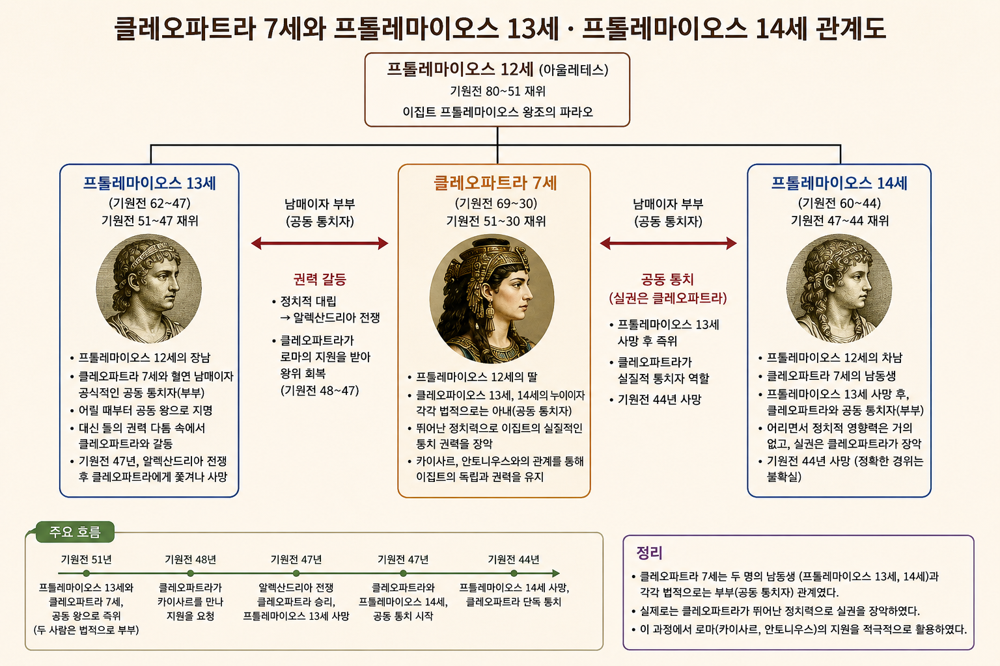

🏛️
11. 로마의 발전과 크리스트교 · 세계사 Ⅰ-3
✦ ✦ ✦
2학년 · 세계사
03. 로마의 발전과 크리스트교
◆
Ⅰ-3. 서아시아, 지중해, 유럽 세계의 형성
교과서 50~53쪽
🔄
지난 시간 복습 — 메소포타미아 vs 이집트 문명
| 구분 | 메소포타미아 | 이집트 |
|---|---|---|
| 발생지 | 티그리스·유프라테스강 | 나일강 유역 |
| 지형 | 개방적 → 지배 세력 잦은 교체 | 폐쇄적(사막·바다) → 안정적 왕조 |
| 최고 통치자 | 왕 = 지배자, 제사장 (신정 정치) | 파라오 (태양신 '라'의 아들) |
| 세계관 | 현세 중시 (길가메시 서사시) | 내세적 (사후 세계 중시) |
| 문자 | 쐐기 문자 | 상형 문자 (파피루스에 기록) |
| 역법·수학 | 태음력 · 60진법 | 태양력 · 10진법 |
| 대표 건축 | 지구라트 | 피라미드 (파라오의 무덤) |
| 대표 법전 | 《함무라비 법전》 | — |
🔄
지난 시간 복습 — 인도 문명
🏙️ 인도 문명
- 기원전 2500년경 인더스 강 상류 펀자브 지방에서 드라비다인이 형성한 것으로 추정
- 계획도시 하라파, 모헨조다로 건설
🚶 아리아인의 이동과 사회
- 기원전 1500년경 아리아인 진출 — 중앙아시아에서 북인도로 이동, 이후 갠지스강까지 진출
- 원주민을 지배하기 위해 카스트제 성립(브라만·크샤트리아·바이샤·수드라)
- 자연신을 숭배하는 브라만교 성립, 경전 《베다》 사용
🔄
지난 시간 복습 — 중국 문명
🌊 하·상 왕조
- 기원전 2500년경 황허강과 창장강 일대에서 문명 발전, 하 왕조(얼리터우 유적)는 문헌상 최초의 국가
- 상 왕조: 왕이 점친 내용을 갑골에 기록하는 신권 정치 실시
- 점친 내용과 결과를 갑골문으로 기록 → 한자의 기원
⚔️ 주 왕조
- 상을 멸망시키고 건국, 왕이 수도 인근을 직접 지배하고 제후에게 나머지 지역을 다스리게 하는 봉건제 실시
- 혈연에 기초한 종법 제도 발전
🔄
복습 — 춘추 전국 시대 빈칸 채우기
◆
춘추 전국 시대 복습
- 춘추 시대에는 춘추 5패가 존왕양이를 명분으로 제후국들을 통솔하였다.
- 전국 시대에는 전국 7웅이 서로 패권을 다투는 약육강식의 시대였다.
- 부국강병을 위한 제후국들의 경쟁 속에서 유가·법가·도가·묵가 등 다양한 사상가 집단인 제자백가가 등장하였다.
🔄
복습 — 진나라 빈칸 채우기 (1)
◆
진나라 복습
- 기원전 221년 전국을 통일한 진왕 정은 스스로를 시황제라 칭하였다.
- 진시황제는 전국에 관리를 파견하여 다스리는 군현제를 실시하였다.
- 중앙 집권 강화를 위해 화폐 통일과 도량형 통일을 단행하였다.
🔄
복습 — 진나라 빈칸 채우기 (2)
◆
진나라 복습
- 사상 통제를 위해 책을 불태우고 유생들을 산 채로 묻은 분서갱유를 단행하였다.
- 북방 흉노족의 침입을 막기 위해 만리장성을 축조하였다.
- 대규모 토목 공사와 무리한 대외 원정으로 백성들의 불만이 커져 진승 오광의 난 등 농민 반란이 일어났고, 결국 진은 멸망하였다.
🔄
복습 — 한나라 빈칸 채우기
◆
한나라 복습
- 한 고조(유방)는 봉건제와 군현제를 절충한 군국제를 실시하였다.
- 한 무제는 유교를 통치 이념으로 삼아 오경박사를 설치하고 태학을 설립하였다.
- 인재 등용을 위해 지방관이 향촌의 인물을 추천하는 향거리선제를 실시하였다.
- 물자 유통과 재정 확충을 위해 균수법과 평준법을 시행하고, 화폐를 오수전으로 통일하였다.
🔄
복습 — 위진 남북조와 수 빈칸 채우기
◆
위진 남북조 복습
- 북위의 효문제는 평성에서 뤄양으로 천도하고 선비족의 언어와 복장을 금지하는 등 한화 정책을 추진하였다.
- 위진 남북조 시대에는 추천을 통해 인재를 선발하는 9품중정제가 실시되어 문벌 사회가 형성되었다.
- 북위 효문제 때 처음 시행된 균전제는 농민에게 국가가 토지를 지급하는 토지 제도로, 이후 수·당 대까지 이어졌다.
🔄
복습 — 수 빈칸 채우기
◆
수 복습
- 수 문제는 9품중정제를 폐지하고 시험을 통해 인재를 선발하는 과거제를 실시하였다.
- 수 문제는 중앙 관제를 정비하여 3성 6부제를 마련하였다.
- 수 양제는 강남과 화북을 잇는 대운하를 완성하여 남북 간 경제 교류를 촉진하였다.
🔄
복습 — 당 빈칸 채우기
◆
당 복습
- 당 태종은 동돌궐을 정복하고 율령 체제를 정비하였는데, 이 시기를 정관의 치라 부른다.
- 8세기 균전제가 붕괴하는 가운데 절도사 안녹산과 사사명이 일으킨 안사의 난으로 당은 크게 쇠퇴하였다.
- 균전제 붕괴 이후 당은 토지와 자산을 기준으로 세금을 부과하는 양세법을 실시하였다.
- 결국 절도사 주전충에 의해 당은 멸망하였다(907).
🔄
복습 — 일본 고대 국가의 성립 빈칸 채우기
◆
일본 고대 국가의 성립 복습
- 6세기 초 쇼토쿠 태자는 중국과 한반도의 선진 문화를 수용하여 정치 개혁을 추진하였다.
- 이 시기 불교 장려책이 실시되면서 아스카 문화가 발전하였다.
- 7세기 중반 군주 중심의 중앙 집권적 체제를 지향한 다이카 개신이 단행되었다(645).
- 이후 당의 율령을 모방한 다이호 율령이 반포되었다.
🔄
복습 — 나라 시대 빈칸 채우기
◆
나라 시대 복습
- 710년 당의 장안을 본떠 조성한 헤이조쿄(나라)로 천도하면서 나라 시대가 시작되었다.
- 나라 시대에는 견신라사와 견당사가 파견되어 대외 교류가 이루어졌다.
- 불교 진흥을 위해 도다이사가 건립되었다.
- 일본의 고대 신화와 역사를 정리한 《고사기》와 《일본서기》가 편찬되었다.
🔄
복습 — 헤이안 시대 빈칸 채우기
◆
헤이안 시대 복습
- 794년 귀족 세력을 견제하기 위해 헤이안쿄(교토)로 천도하면서 헤이안 시대가 시작되었다.
- 9세기 말 당이 쇠퇴하자 견당사 파견을 중지하였다.
- 이후에도 민간 무역은 지속되어 대외 무역 창구가 규슈의 다자이후로 집중되었다.
- 견당사 파견 중지를 계기로 가나 문자 성립, 와카 유행 등 일본 고유의 국풍 문화가 발달하였다.
🔄
복습 — 불교와 자이나교의 성립 빈칸 채우기
◆
불교와 자이나교의 성립 복습
- 윤회 사상을 바탕으로, 카스트제를 극복하고자 하는 움직임 속에서 자이나교와 불교가 성립하였다.
- 바르다마나(마하비라)가 창시한 자이나교는 엄격한 계율과 고행을 통한 해탈을 추구하였다.
- 고타마 싯다르타(석가모니)가 창시한 불교는 인간의 평등과 윤리적 실천을 통한 해탈을 강조하였다.
🔄
복습 — 마우리아 왕조 빈칸 채우기
◆
마우리아 왕조 복습
- 찬드라굽타는 알렉산드로스의 침략 이후 북인도의 혼란을 수습하며 마우리아 왕조를 세웠다.
- 마우리아 왕조의 전성기를 이끈 아소카왕은 칼링가 전투의 참상을 겪은 뒤 불교에 귀의하여 선정을 베풀었다.
- 아소카왕 때 개인의 해탈을 강조하는 상좌부 불교가 발달하였다.
🔄
복습 — 쿠샨 왕조 빈칸 채우기
◆
쿠샨 왕조 복습
- 이란 계통의 민족이 세운 쿠샨 왕조는 인도 서북부를 통일하고 동서 교역로를 장악하여 번영하였다.
- 카니슈카왕 때 쿠샨 왕조는 북인도에서 중앙아시아에 이르는 최대 영토를 확보하며 전성기를 맞았다.
- 중생의 구제를 목표로 부처를 초월적 존재로 신격화한 대승 불교가 발달하였다.
- 헬레니즘 문화와 인도 문화가 융합된 간다라 미술이 대승 불교와 함께 동아시아로 전파되었다.
🔄
복습 — 굽타 왕조 빈칸 채우기
◆
굽타 왕조 복습
- 굽타 왕조 시기에 브라만교를 바탕으로 민간 신앙과 불교 등이 융합되어 힌두교가 성립하였다.
- 왕의 권위를 높이기 위해 왕들은 자신을 비슈누에 비유하였다.
- 굽타 왕조 시기 산스크리트어가 공용어로 사용되며 산스크리트 문학이 발달하였다.
- 간다라 양식과 인도 고유의 특색이 융합된 굽타 양식이 발달하였다.
🔄
아시리아 빈칸 채우기
◆
아시리아
- 아시리아는 기원전 7세기 철제 무기와 전차로 무장한 기병을 앞세워 서아시아 대부분을 통일하였다.
- 아시리아는 수도 니네베에 왕립 도서관을 세워 학문 발전을 촉진하였다.
- 아시리아는 피지배 민족에 대한 강압적 통치로 반란이 일어나 멸망하였다.
🔄
아케메네스 왕조 페르시아 ① 빈칸 채우기
◆
아케메네스 왕조 페르시아 ①
- 아케메네스 왕조 페르시아의 키루스 2세는 기원전 6세기 중엽 서아시아 지역을 통일하였다.
- 키루스 2세는 정복한 민족의 문화와 종교를 존중하는 포용 정책을 통해 제국을 성장시켰다.
🔄
아케메네스 왕조 페르시아 ② 빈칸 채우기
◆
아케메네스 왕조 페르시아 ②
- 다리우스 1세는 전국을 20여 개 행정 구역으로 나누어 총독을 파견하였다.
- 다리우스 1세는 '왕의 눈', '왕의 귀'라 불리는 감찰관을 보내 지방을 감시하였다.
- 다리우스 1세는 '왕의 길'을 건설하고 역참제를 정비하여 중앙 집권 체제를 강화하였다.
🔄
사산 왕조 페르시아 빈칸 채우기
◆
사산 왕조 페르시아
- 사산 왕조 페르시아는 아케메네스 왕조 페르시아의 부흥을 내걸고 건국되었다.
- 사산 왕조 페르시아는 동서 교통의 요충지를 차지하고 중계 무역으로 번영하였다.
- 사산 왕조 페르시아는 비잔티움 제국과의 계속된 전쟁과 계승 분쟁으로 쇠퇴하다가 이슬람 세력에 멸망하였다.
🔄
복습 — 폴리스의 성립 빈칸 채우기
◆
폴리스의 성립 복습
- 고대 그리스에서는 도시를 중심으로 자급자족과 자치를 원칙으로 하는 작은 국가인 폴리스가 형성되었다.
- 폴리스에는 신전 등이 모인 종교의 중심지인 아크로폴리스가 있었다.
- 폴리스에는 시민들이 모여 정치·경제 활동을 벌인 광장인 아고라가 있었다.
🔄
복습 — 아테네의 민주 정치 ① 빈칸 채우기
◆
아테네의 민주 정치 ① 복습
- 클레이스테네스는 부족제를 혈연 중심에서 거주지 중심으로 개편하였다.
- 시민들의 정치 참여를 확대하기 위해 500인 평의회가 설치되었다.
- 독재자가 될 가능성이 있는 인물을 투표로 추방하는 도편 추방제가 시행되었다.
- 그리스·페르시아 전쟁 이후 아테네를 맹주로 하는 델로스 동맹이 결성되었다.
🔄
복습 — 아테네의 민주 정치 ② 빈칸 채우기
◆
아테네의 민주 정치 ② 복습
- 페리클레스는 모든 성인 남자 시민이 민회에 참석할 수 있도록 하였다.
- 민회·배심원 등 공적 직무를 맡은 시민에게 공무 수당이 지급되었다.
- 장군 등 특수 직책을 제외한 관직과 배심원은 관직 추첨(으)로 선출하였다.
🔄
복습 — 아테네의 민주 정치 ③ 빈칸 채우기
◆
아테네의 민주 정치 ③ 복습
- 델로스 동맹과 펠로폰네소스 동맹이 충돌하며 펠로폰네소스 전쟁이 일어났다.
- 전쟁은 스파르타의 승리로 끝났고, 그리스 세계의 내분은 더욱 심화되었다.
- 내분에 빠진 그리스는 마케도니아의 필리포스 2세에게 정복되었다.
🔄
복습 — 알렉산드로스의 제국 건설 빈칸 채우기
◆
알렉산드로스의 제국 건설 복습
- 필리포스 2세의 뒤를 이은 알렉산드로스는 동방 원정을 시작하였다.
- 아케메네스 왕조 페르시아를 정복한 알렉산드로스는 이어서 이집트까지 정복하였다.
- 알렉산드로스의 원정군은 동쪽으로 인더스 강까지 진출하였다.
- 알렉산드로스는 정복지 곳곳에 알렉산드리아(이)라는 도시를 세워 그리스인들을 이주시켰다.
🔄
복습 — 헬레니즘 문화 빈칸 채우기
◆
헬레니즘 문화 복습
- 그리스 문화가 동방으로 확산되며 그리스 문화와 오리엔트 문화가 융합되었다.
- 이 시기 문화는 개인주의적 성격과 더불어 세계 시민주의적 성격을 띠었다.
- 그리스 문화와 오리엔트 문화가 융합된 문화를 헬레니즘 문화라고 한다.
- 헬레니즘 문화의 영향으로 인도에서는 간다라 미술이 탄생하였다.
🏛️
1. 로마 공화정의 발달 ① — 국가 체제의 변화
✦ ✦ ✦
1. 로마 공화정의 발달 ①
국가 체제의 변화
◆
🏙️ 국가 체제의 변화
도시 국가
(기원전 8세기 중엽)
(기원전 8세기 중엽)
→
왕정
→
공화정 시작
(기원전 6세기 초)
(기원전 6세기 초)
🏛️
1. 로마 공화정의 발달 ① — 공화정의 구성
✦ ✦ ✦
1. 로마 공화정의 발달 ①
공화정의 구성
◆
🏛️ 공화정의 구성
원로원 · 집정관 · 민회로 구성
⚔️
1. 로마 공화정의 발달 ② — 평민의 신분 투쟁
✦ ✦ ✦
1. 로마 공화정의 발달 ②
평민의 신분 투쟁
◆
⚔️ 평민의 신분 투쟁
- 상공업 발달 → 부유한 평민이 중장 보병으로 활약
- → 정치적 권리 요구: 호민관과 평민회 설치
- → ➊ 호르텐시우스 법 제정
📜
1. 로마 공화정의 발달 ② — 호르텐시우스법
✦ ✦ ✦
1. 로마 공화정의 발달 ②
호르텐시우스법
◆
📜 호르텐시우스법
평민회 결의가 법적 효력을 가지며, 평민은 법률상 귀족과 동등한 지위
⚔️
1. 로마 공화정의 발달 ③ — 포에니 전쟁 · 내용
✦ ✦ ✦
포에니 전쟁 (로마–카르타고 전쟁)
내용
◆
⚔️ 내용
로마의
이탈리아 통일
이탈리아 통일
→
카르타고와
3차례 전쟁
3차례 전쟁
→
로마 승리
🌍
1. 로마 공화정의 발달 ③ — 포에니 전쟁 · 결과
✦ ✦ ✦
포에니 전쟁 (로마–카르타고 전쟁)
결과
◆
🌍 결과
- 로마의 서부 지중해 패권 차지
- 이후 마케도니아와 그리스 등 정복
📜
1. 로마 공화정의 발달 ④ — 그라쿠스 형제의 개혁
✦ ✦ ✦
그라쿠스 형제의 개혁
◆
👨👦 그라쿠스 형제의 개혁
| 배경 | 포에니 전쟁 이후 라티푼디움(대농장) 유행, 자영농 몰락 |
|---|---|
| 내용 | 그라쿠스 형제 호민관 취임 → 농지법, 곡물법 실시 |
| 결과 | 귀족의 반발로 실패 |
🌀
1. 로마 공화정의 발달 ⑤ — 공화정의 혼란
✦ ✦ ✦
공화정의 혼란
◆
🌀 공화정의 혼란
- 귀족파와 평민파의 대립 격화
- 스파르타쿠스의 노예 반란 등
👑
2. 로마 제국의 발전과 몰락 ① — 삼두 정치 · 1차
✦ ✦ ✦
2. 로마 제국의 발전과 몰락 ①
삼두 정치 — 1차 삼두 정치
◆
삼두 정치: 공화정 혼란기에 군인 정치가 중심으로 형성
1️⃣ 1차 삼두 정치
- 카이사르가 주도
- 갈리아 전쟁을 통해 영토 확장
- 독재 정치 → 귀족에게 암살
🗡️
카이사르 암살
✦ ✦ ✦
◆

👑
클레오파트라
✦ ✦ ✦
◆

👑
클레오파트라와 동생들
✦ ✦ ✦
◆

👑
2. 로마 제국의 발전과 몰락 ① — 삼두 정치 · 2차
✦ ✦ ✦
2. 로마 제국의 발전과 몰락 ①
삼두 정치 — 2차 삼두 정치
◆
2️⃣ 2차 삼두 정치
- 옥타비아누스가 주도
- 악티움 해전 승리
- 로마 지배권 장악
👑
2. 로마 제국의 발전과 몰락 ② — 제정의 발전 · 옥타비아누스
✦ ✦ ✦
로마 제정의 발전
옥타비아누스 — 사실상 제정 시작
◆
👑 옥타비아누스 — 사실상 제정 시작
- 프린켑스(제1 시민) 자처
- 원로원으로부터 '아우구스투스(존엄한 자)' 칭호 부여
- 사실상 제정 시작
🌿
2. 로마 제국의 발전과 몰락 ② — 제정의 발전 · 로마의 평화
✦ ✦ ✦
로마 제정의 발전
'로마의 평화(Pax Romana)' 시대
◆
🌿 '로마의 평화(Pax Romana)' 시대
- 옥타비아누스 ~ 5현제 시대 (약 200여 년간)
- 정치적 안정과 최대 영토 확보
⚠️
2. 로마 제국의 발전과 몰락 ③ — 제정의 쇠퇴 · 3세기 위기
✦ ✦ ✦
로마 제정의 쇠퇴 ①
3세기 위기
◆
⚠️ 3세기 위기
- 게르만족, 사산 왕조 페르시아의 국경 위협
- 군대의 황제 옹립
- 콜로나투스 운영
🔱
2. 로마 제국의 발전과 몰락 ④ — 제정의 쇠퇴 · 디오클레티아누스
✦ ✦ ✦
로마 제정의 쇠퇴 ②
황제들의 대응 — 디오클레티아누스
◆
🔱 디오클레티아누스
- 4제 통치 체제 마련
- 황제권 강화(전제 군주제 도입)
🔱
2. 로마 제국의 발전과 몰락 ④ — 제정의 쇠퇴 · 콘스탄티누스
✦ ✦ ✦
로마 제정의 쇠퇴 ②
황제들의 대응 — 크리스트교 공인
◆
🔱 ➋
콘스탄티누스
- 크리스트교 공인
- 콘스탄티노폴리스 건설 및 천도
🔱
2. 로마 제국의 발전과 몰락 ④ — 제정의 쇠퇴 · 테오도시우스
✦ ✦ ✦
로마 제정의 쇠퇴 ②
황제들의 대응 — 테오도시우스
◆
🔱 테오도시우스
- 크리스트교 국교 선포
- 황제 사후 동·서로마 분리
✝️
3. 크리스트교 등장과 확산 ① — 박해
✦ ✦ ✦
3. 크리스트교 등장과 확산 ①
박해
◆
🔥 박해
- 다신교 전통과 갈등
- 로마 제국 초기에 탄압
📈
3. 크리스트교 등장과 확산 ① — 성장
✦ ✦ ✦
3. 크리스트교 등장과 확산 ①
성장
◆
📈 성장
- ➌ 밀라노 칙령 (313): 콘스탄티누스 황제가 크리스트교 공인
- 테오도시우스 황제: 크리스트교 국교화
🌍
3. 크리스트교 등장과 확산 ② — 확산
✦ ✦ ✦
3. 크리스트교 등장과 확산 ②
확산
◆
🌍 확산
⛪ 서유럽
로마 교회 중심
게르만족에게 전파
🏙️ 동유럽
콘스탄티노폴리스 교회 중심
슬라브족에게 전파
📚
4. 실용적인 로마 문화 — 학문과 예술
✦ ✦ ✦
4. 실용적인 로마 문화
학문과 예술
◆
📚 학문과 예술
- 그리스 문화 모방
🏗️
4. 실용적인 로마 문화 — 실용적 문화 발달
✦ ✦ ✦
4. 실용적인 로마 문화
실용적 문화 발달
◆
🏗️ 실용적 문화 발달
- 법률, 토목, 건축 등 발전
⚖️
4. 실용적인 로마 문화 — 법률의 발전
✦ ✦ ✦
4. 실용적인 로마 문화
법률의 발전
◆
⚖️ 법률의 발전
12표법
(관습법의 성문화)
(관습법의 성문화)
→
시민법
→
만민법
✏️
개념 확인 문제 ① — 빈칸 채우기
✦ ✦ ✦
개념 확인 문제 ①
빈칸에 들어갈 알맞은 말을 쓰시오.
◆
⑴
평민들의 신분 투쟁 결과 귀족들이 평민의 대표자로
(호민관)와/과
평민회를 인정하였으며, 이후 제정된 호르텐시우스법을 통해 평민회의 결의가 법적 효력을 가지게 되었다.
⑵
콘스탄티누스 황제 때 크리스트교는
(밀라노 칙령)을/를
통해 공인되었으며, 니케아 공의회를 통해 아타나시우스파의 교리가 정통으로 인정되었다.
⑶
3세기 초반 로마법은
(만민법)으로
확대되어 제국의 자유인에게 로마 시민으로서의 정체성을 갖게 하였다.
✏️
개념 확인 문제 ② — 인물 찾기
✦ ✦ ✦
개념 확인 문제 ②
다음 내용과 관련 있는 인물을 <보기>에서 고르시오.
<보기> ㄱ. 옥타비아누스 ㄴ. 콘스탄티누스 ㄷ. 테오도시우스 ㄹ. 디오클레티아누스
◆
⑴
크리스트교를 국교로 확정하였다.
ㄷ. 테오도시우스
⑵
'아우구스투스'의 칭호를 받았으며 제정을 시작하였다.
ㄱ. 옥타비아누스
⑶
로마 제국을 4분할하여 4제 통치 체제를 마련하였다.
ㄹ. 디오클레티아누스
⑷
콘스탄티노폴리스를 새로운 수도로 건설하여 천도하였다.
ㄴ. 콘스탄티누스
✏️
개념 확인 문제 ③ — (가)에 들어갈 명칭 쓰기
✦ ✦ ✦
개념 확인 문제 ③
(가)에 들어갈 명칭을 쓰시오.
◆
📜 지문
(가) 은/는 라티푼디움으로 인해 자영농이 몰락하는 상황을 해결하기 위해 대토지 경영을 제한하는 농지법을 제정하고, 시민에게 싼 값으로 곡물을 제공하는 곡물법을 제정하는 등의 개혁을 취하였다. 그러나 (가) 의 개혁은 귀족들의 반발로 큰 성과를 거두지 못하였고, 귀족파와 평민파가 서로 대립하는 결과를 가져왔다.
(가) =
그라쿠스 형제
🔄
복습 — 평민의 신분 투쟁 빈칸 채우기
◆
평민의 신분 투쟁 복습
- 상공업이 발달하면서 부유한 평민이 중장 보병으로 활약하였고, 이들이 정치적 권리를 요구하자 평민의 대표인 호민관과 평민들의 의결 기구인 평민회가 설치되었다.
- 이후 제정된 호르텐시우스법으로 평민회의 결의가 법적 효력을 가지게 되었으며, 평민은 법률상 귀족과 동등한 지위를 얻었다.
🔄
복습 — 그라쿠스 형제의 개혁 빈칸 채우기
◆
그라쿠스 형제의 개혁 복습
- 포에니 전쟁 이후 노예 노동을 이용한 대농장인 라티푼디움이 유행하면서 자영농이 몰락하였다.
- 이에 그라쿠스 형제는 호민관에 취임하여 대토지 소유를 제한하는 농지법과 시민에게 값싼 곡물을 제공하는 곡물법을 실시하였다.
- 그러나 그라쿠스 형제의 개혁은 귀족의 반발로 실패하였다.
🔄
복습 — 제정의 성립 빈칸 채우기
◆
제정의 성립 복습
- 2차 삼두 정치를 주도한 옥타비아누스는 악티움 해전에서 승리하여 로마의 지배권을 장악하였다.
- 그는 프린켑스(제1 시민)를 자처하고, 원로원으로부터 '존엄한 자'를 뜻하는 아우구스투스 칭호를 받아 사실상 제정을 시작하였다.
🔄
복습 — 디오클레티아누스 빈칸 채우기
◆
디오클레티아누스 복습
- 3세기 위기 속에서 디오클레티아누스는 제국을 넷으로 나누어 다스리는 4제 통치 체제를 마련하였다.
- 또한 그는 황제권을 크게 강화하여 전제 군주제를 도입하였다.
🔄
복습 — 콘스탄티누스 빈칸 채우기
◆
콘스탄티누스 복습
- 콘스탄티누스는 313년 밀라노 칙령을 발표하여 크리스트교를 공인하였다.
- 그는 325년 니케아 공의회를 열어 아타나시우스파를 정통 교리로 채택하였다.
- 그는 비잔티움으로 수도를 옮기고 이를 콘스탄티노폴리스로 이름을 바꾸었다.
🔄
복습 — 테오도시우스 빈칸 채우기
◆
테오도시우스 복습
- 테오도시우스는 크리스트교 국교화를 단행하여 크리스트교를 로마 제국의 유일한 종교로 삼았다.
- 그가 죽은 뒤 로마 제국은 동로마와 서로마로 분리되었다.